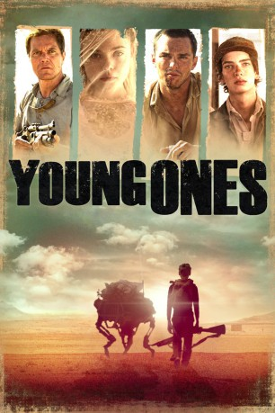

#9231 Young Ones
 
 IMDB-Wertung: 5.9 / 10
IMDB-Wertung: 5.9 / 10  Tomatometer: 52
Tomatometer: 52  Metascore: 0
Metascore: 0 
In einer nicht weit entfernten Zukunft ist der einstige "Blaue Planet" zu einer kargen Ödlandschaft verkommen. Der wertvollste Rohstoff während der immerwährenden Dürre ist Wasser. Ernest Holm lebt gemeinsam mit seinen beiden Kindern Mary und Jerome am Rande der bewohnbaren Zone auf einer Farm. Gewalttätige Übergriffe gehören in dieser unwirtlichen Umgebung zur Tagesordnung. So muss sich die Familie nicht selten auch mit Gewalt den streunenden Banditen und Plünderern erwehren. Während Ernest versucht, sich und seine Liebsten durchzubringen, plant Flem Lever, der zwielichtige Freund von Ernests Tochter, die Ranch in seinen Besitz zu bringen. Für dieses Vorhaben würde er sogar über Leichen gehen...
Jahr: 2014
Dauer: 100 Minuten
FSK: 16
Land: Süd-Afrika Studio: Ascot Elite Home EntertainmentTonspuren: DTS - ,
Untertitel: Deutsch,
Auflösung: 1080p (1920x808) Größe: 7321 MB
Genre: Action, Drama, Sci-Fi, Western, Liebe
Regisseur: Jake Paltrow
Drehbuch: Jake Paltrow
Soundtrack: Nathan Johnson
Darsteller:
 Michael Shannon als Ernest Holm
Michael Shannon als Ernest Holm Nicholas Hoult als Flem Lever
Nicholas Hoult als Flem Lever Elle Fanning als Mary Holm
Elle Fanning als Mary Holm Kodi Smit-McPhee als Jerome Holm
Kodi Smit-McPhee als Jerome Holm Robert Hobbs als Caleb Moore
Robert Hobbs als Caleb Moore- Aimee Mullins als Katherine Holm
- Alex McGregor als Sooz
- Liah O'Prey als Anna
 Andy McPhee als Foreman
Andy McPhee als Foreman- David Butler als Sam Lever
- Christy Pankhurst als Robbie
- David Clatworthy als Calvin Hooyman
- Carel Nel als Bandit
- Barry Armitage als Well-dressed man
- Ben Horowitz als Water Guard
- Rachel Wood als Orderly
- Charles Tertiens als Border Inspector
- Gideon van Schoor als Bandit Brother
- Karen Snyman als Well-dressed woman
- Vlam Beukes als Mailman
- Olan Liebenberg als Sooz's Baby
- Gustav de Vries als Sooz's Baby
- David van der Westhuizen als Sooz's Baby
Datei: X:\2014(N-Z)\Young Ones (2014, FSK16, 1920x808).mkv seit 20.07.2018
Festplatte: HD 2013(I-Z)-2014(A-Z)
 Es gibt insgesamt 163 Filme in der Gruppe '2014(N-Z)'
Es gibt insgesamt 163 Filme in der Gruppe '2014(N-Z)'